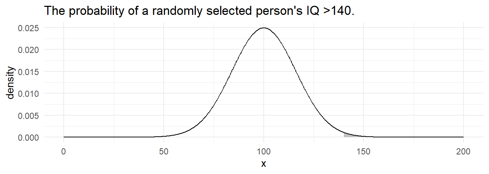
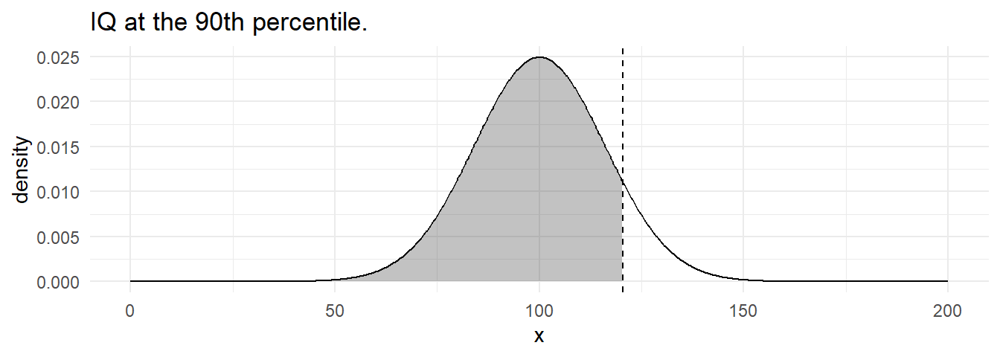
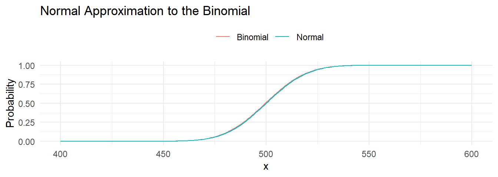
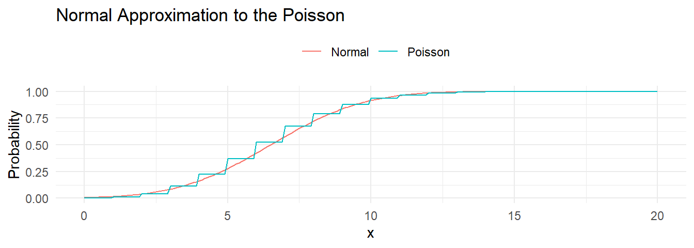

1.3 Continuous Distributions
1.3.1 Normal
Random variable \(X\) is distributed \(X \sim N(\mu, \sigma^2)\) if
\[f(X)=\frac{{1}}{{\sigma \sqrt{{2\pi}}}}e^{-.5(\frac{{x-\mu}}{{\sigma}})^2}\].
Suppose IQ scores are distributed \(X \sim N(100, 16^2\). What is the probability a randomly selected person’s IQ is <90?*
## [1] 0.27Or simulate this by taking the mean of 10,000 random trials.
## [1] 0.27data.frame(x = 0:1500 / 10) %>%
mutate(density = pnorm(x, mean = 100, sd = 16, lower.tail = TRUE),
cdf = if_else(x > 0 & x <= 90, density, as.numeric(NA))) %>%
ggplot() +
geom_line(aes(x = x, y = density)) +
geom_area(aes(x = x, y = cdf), alpha = 0.3) +
theme_minimal() +
labs(title = "P(X < 90) when X ~ N(100, 16^2)")
What is the probability a randomly selected person’s IQ is >140?
## [1] 0.73data.frame(x = 0:1500 / 10) %>%
mutate(density = pnorm(x, mean = 100, sd = 16, lower.tail = TRUE),
cdf = if_else(x > 140 & x <= Inf, density, as.numeric(NA))) %>%
ggplot() +
geom_line(aes(x = x, y = density)) +
geom_area(aes(x = x, y = cdf), alpha = 0.3) +
theme_minimal() +
labs(title = "P(X > 140) when X ~ N(100, 16^2)")
What is the probability a randomly selected person’s IQ is between 92 and 114?*
pnorm(q = 114, mean = 100, sd = 16, lower.tail = TRUE) -
pnorm(q = 92, mean = 100, sd = 16, lower.tail = TRUE)## [1] 0.5data.frame(x = 0:1500 / 10) %>%
mutate(density = pnorm(x, mean = 100, sd = 16, lower.tail = TRUE),
cdf = if_else(x > 92 & x < 114, density, as.numeric(NA))) %>%
ggplot() +
geom_line(aes(x = x, y = density)) +
geom_area(aes(x = x, y = cdf), alpha = 0.3) +
theme_minimal() +
labs(title = "P(X > 92 & X < 114) when X ~ N(100, 16^2)")
What IQ is the 90th percentile?
## [1] 121By the central limit theorem (CLT) the binomial distribution \(X \sim B(n,p)\) approaches the normal distribution with mean \(\mu = n p\) and variance \(\sigma^2=np(1-p)\) as \(n \rightarrow \infty\). The approximation is useful when the expected number of successes and failures is at least 5, \(np>=5\) and \(n(1-p)>=5\).
Suppose a measure requires p>=50% popular to pass. A sample of n=1,000 yields x=460 approvals. What is the probability that the overall population approves, P(X)>0.5?
## [1] 0.0062# Normal approximation
pnorm(q = 460, mean = 0.50 * 1000, sd = sqrt(1000 * 0.50 * (1 - 0.50)), lower.tail = TRUE)## [1] 0.0057sd <- sqrt(1000 * 0.50 * (1 - 0.50))
data.frame(x = 400:600) %>%
mutate(Normal = pnorm(q = x, mean = 0.50 * 1000, sd = sd, lower.tail = TRUE),
Binomial = pbinom(q = x, size = 1000, prob = 0.50, lower.tail = TRUE)) %>%
pivot_longer(-x, names_to = "Distribution", values_to = "cdf") %>%
ggplot(aes(x = x, y = cdf, color = Distribution)) +
geom_line() +
theme_minimal() +
theme(legend.position = "top") +
labs(title = "Normal Approximation to the Binomial",
x = "x", y = "Probability", color = "")
By the central limit theorem (CLT) the Poisson distribution \(x~P(\lambda)\) approaches the normal distribution with mean \(\mu = \lambda\) and variance \(\sigma^2 = \lambda\) as \(n \rightarrow \infty\). The approximation is useful for large values of \(\lambda\).
Suppose the annual number of earthquakes registering at least 2.5 on the Richter Scale and having an epicenter within 40 miles of downtown Memphis follows a Poisson distribution with mean \(\lambda=6.5\). What is the probability that at least \(x>=9\) such earthquakes will strike next year?
## [1] 0.21## [1] 0.22sd <- sqrt(1000 * 0.50 * (1 - 0.50))
data.frame(x = 0:200 / 10) %>%
mutate(Normal = pnorm(q = x, mean = 6.5, sd = sqrt(6.5), lower.tail = TRUE),
Poisson = ppois(q = x, lambda = 6.5, lower.tail = TRUE)) %>%
pivot_longer(-x, names_to = "Distribution", values_to = "cdf") %>%
ggplot(aes(x = x, y = cdf, color = Distribution)) +
geom_line() +
theme_minimal() +
theme(legend.position = "top") +
labs(title = "Normal Approximation to the Poisson",
x = "x", y = "Probability", color = "")
Estimate the population from the sample using the CLT.
Suppose a person’s blood pressure typically measures \(160 \pm 20\) mm. If one takes n=5 blood pressure readings, what is the probability the average will be <=150?*
## [1] 0.131.3.2 Chi-Squared
Random variable \(X\) is distributed \(X \sim \chi^2_k\) if
\[f(X)=\frac{1}{2^{k/2}\Gamma (k/2)} x^{k/2-1} e^{-x/2}\]
with \(E(X)=k\) and \(Var(X) = 2k\).
Suppose a researcher crosses tall cut-leaf tomatoes with dwarf potato-leaf tomatoes, then classifies the (n = 1,611) offspring phenotypes. The four phenotypes are expected to occur with relative frequencies 9:3:3:1. What is the probability of observing frequencies 926, 288, 293, 104?
cell_names <- c("tall cut-leaf", "tall potato-leaf", "dwarf cut-leaf", "dwarf potato-leaf")
o <- c(926, 288, 293, 104)
names(o) <- cell_names
pi <- c(9, 3, 3, 1) / (9 + 3 + 3 + 1)
e <- sum(o) * pi
names(e) <- cell_names## [1] 3## [1] 1.5## [1] 0.69Or simulate this by taking the mean of 10,000 random trials.
## [1] 0.68data.frame(x = 0:100 / 10) %>%
mutate(density = pchisq(x, df = dof, lower.tail = FALSE),
cdf = if_else(x > x2, density, as.numeric(NA))) %>%
ggplot() +
geom_line(aes(x = x, y = density)) +
geom_area(aes(x = x, y = cdf), alpha = 0.3) +
theme_minimal() +
labs(title = "P(X^2 > 1.47) when X ~ ChiSq(3)")
How large would \(X^2\) have to be to conclude the observed were not in agreement with expectations?
## [1] 7.8